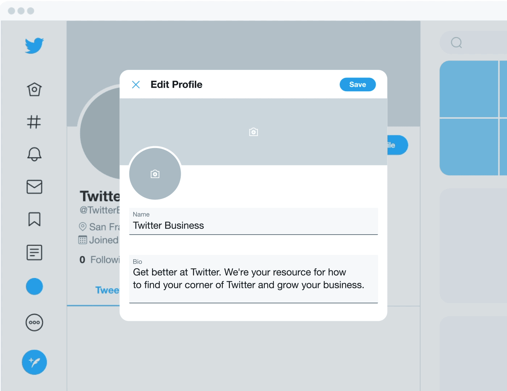
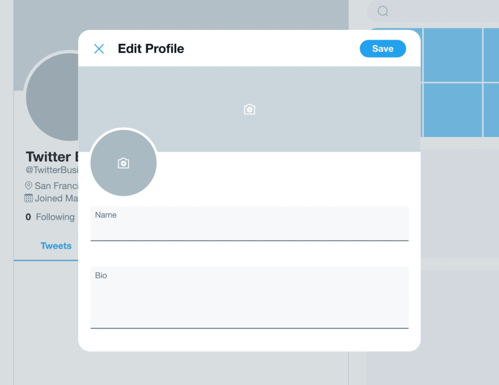
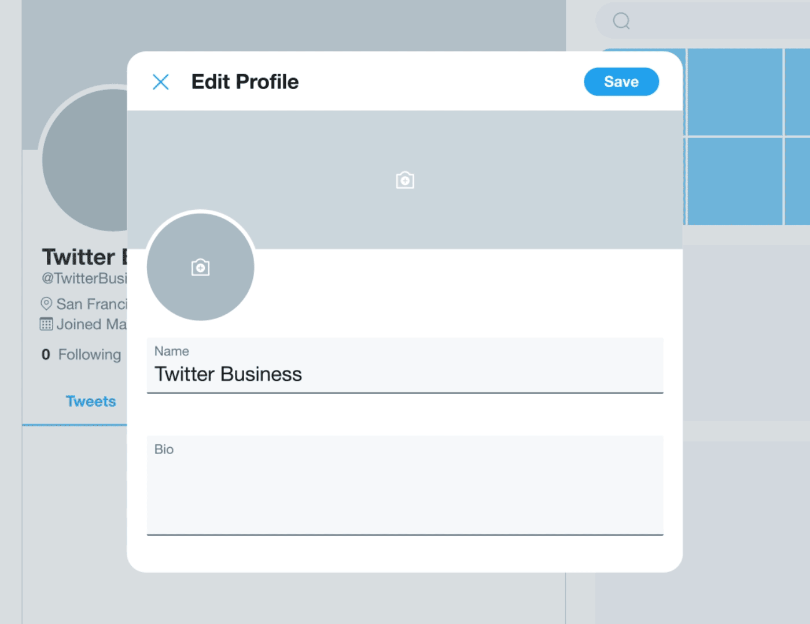
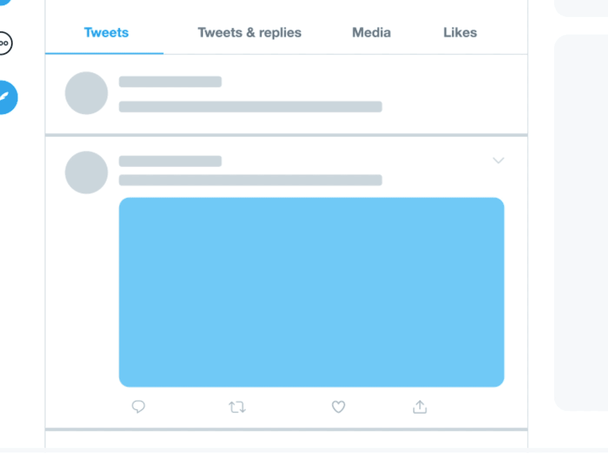

It's important to establish your brand and business presence on Twitter. First impressions
count, and your profile is your chance to make a lasting, positive one. Each element of your profile should
accurately reflect your brand’s purpose and values, and persuade a potential customer to follow you.
We'll break down the four key parts of a Twitter profile, along with tips and suggestions
for each field.
1. Your profile and header photos
Choose a profile photo that visually represents your brand and
fits well in a small, circular space — typically your logo. This doesn’t just appear on your profile — it's the
icon associated with every Tweet you post. Recommended dimensions are 400x400 pixels.
Your header photo should be an ever-changing billboard
showcasing what’s new. This can be an upcoming launch or campaign, or a new photoshoot that nails your current
vibe. Update it each quarter to keep things fresh and interesting. Recommended dimensions are 1500x500 pixels.
Make sure both photos are clear, high-quality, and create
visual consistency. Upload photos in JPG, GIF, or PNG formats.

2. Your display name and account @name
Your account @name is what comes after the
“@”. It’s unique to you, appears in your profile URL, and is tied to everything you do on Twitter. It can
contain up to 15 characters and should be directly associated with the name of your business.
Your display name appears right above your
@name and can be changed at any time. A best practice is to have this be the name of your brand or business. It
can contain up to 50 characters.

3. Your bio
Channel your go-to elevator pitch here. In these 160 characters, you’ll be
introducing yourself to the world. Tell people what you do, what value you bring, and why they should follow you
• Add a direct link to your website. Include a link to what you want people
to see now. It might not be your homepage — consider your “About” page or the landing page of your latest
campaign. Use a unique link to track visitors to your site from Twitter.
•Add your location, even if your presence is purely online. You can add your HQ
and/or founding city, or places you ship to. This helps you reach and connect with local followers.
•If you have a brick-and-mortar store, be sure to include your current hours.


4. Your pinned Tweet
This is what you want your followers to focus on — your biggest, latest news.
It’s ok if you have the same focus for several months in a row (e.g. if you’re raising money over a six-month
period, then the same Tweet will do), but you should check in each month and ask yourself if you have a more
pressing message to highlight. This can be:
•Your ongoing sale or promotion. Start promoting
and teasing it a few days in advance to stir up buzz.
•Your latest product launch. Reinforce the excitement and keep the
momentum going.
•A cause or charity you're supporting. Showcase your company's latest
humanitarian efforts and show how you give back to the community.
• To pin a Tweet, simply click the down arrow at the top-right corner
of the Tweet and select “Pin to your profile”.
To pin a Tweet, simply click the down arrow at the
top-right corner of the Tweet and select “Pin to your profile”.
Additional resources
Twitter followers
Learn why
Twitter are important, and how to get more
Twitter followers
Learn why
Twitter are important, and how to get more
Twitter followers
Learn why
Twitter are important, and how to get more
Drive traffic and visibility to your Twitter profile